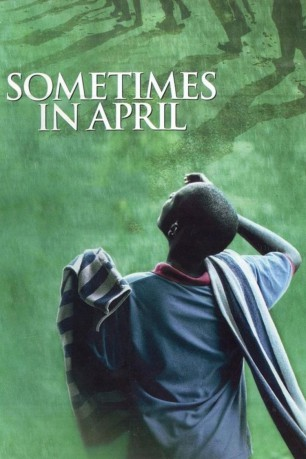

#7856 Immer wieder im April
Alternativ: Als das Morden begann (Englischer Titel)
 
 IMDB-Wertung: 7.9 / 10
IMDB-Wertung: 7.9 / 10  Metascore: 0
Metascore: 0 
Während Augustin Muganza, der selbst ein Hutu ist aber mit einer Tutsi verheiratet ist, seine Familie verliert, ist sein Bruder Honoré einer der Einpeitscher für den Völkermord, der sich vor dem Internationalen Strafgerichtshof für Ruanda in Arusha verantworten muss.
Jahr: 2005
Dauer: 134 Minuten
FSK:
Land: Frankreich Studio: HBO FilmsTonspuren: DD2.0 - ,
Untertitel:
Auflösung: 1080p (1920x1080) Größe: 9093 MB
Genre: Drama, Krieg, Geschichte
Regisseur: Raoul Peck
Drehbuch: Raoul Peck
Soundtrack: Bruno Coulais
Darsteller:
 Idris Elba als Augustin
Idris Elba als Augustin- Pamela Nomvete als Martine
- Oris Erhuero als Honoré
- Fraser James als Xavier
 Noah Emmerich als Lionel Quaid
Noah Emmerich als Lionel Quaid Debra Winger als Prudence Bushnell
Debra Winger als Prudence Bushnell Jay Benedict als Bushnell's Colleague
Jay Benedict als Bushnell's Colleague Todd Boyce als John
Todd Boyce als John- Brian Greene als 'Hutsi' Journalist
- Hubert Koundé als Father Salomon
 Aïssa Maïga als Young Militant
Aïssa Maïga als Young Militant Peter McRobbie als Bushnell's Superior
Peter McRobbie als Bushnell's Superior Tom Tammi als Lt. Colonel #2
Tom Tammi als Lt. Colonel #2 Bill Clinton als Himself (archive footage) (uncredited)
Bill Clinton als Himself (archive footage) (uncredited)- Brian Williams als Himself (archive footage) (uncredited)
- Carole Karemera als Jeanne
- Abby Mukiibi Nkaaga als Colonel Bagosora
- Cleophas Kabasita als Valentine
- Peninah Abatoni als Woman Refugee #1
- Ashani Alles als Prosecutor
- Hope Azeda als Brigitte
- Théogène Barasa als RAF Soldier #1
- Dan Barlow als Belgian UN Soldier
- Johannes Bausch als UN Officer #1
- Andrew Benon als Father Munanira
- Paul Boneza als RAF Soldier #2
- Stephen Buckingham als Judge Arusha
- Gloria Bugwiza als Woman Refugee #2
- Charles Bwanika als DJ Max
- Ismael Gueven Byaruhanga als RAF Soldier #3
- Philippe Chanel als Bushnell's Husband
- Tony Curtis als Jeffrey Patterson
- Ronald Fernee als David Rawson
- Bonaventure Gasutwa als RAF Officer #1
- Patty Hannock als Lawyer
- Jeff Harding als Lt. Colonel #1
- Willy Marcel Higiro als Honoré's Colleague
- Ninette Hyringango als Secretary Radio RTLM
- Alexandre Ikuzo Abia als Marcus
- Francis Imbuga als Priest
- Nicholas Jewitt als Mr. Vilbur
- Isabelle Kabano als Felicie
- Kaya Kagimumukasa als Agathe Uwilingiyimana
- Franck Karenzi Semana als Prosecutor
- Chantal Karungi als Woman Refugee #3
- Musa Kasonka Jr. als Suit #1
- Denis Kayonga als Mathieu
- Abubakar Kawenja als Militia Man #1
- G. Arnaud Kubwachristo als Young Guide
- Samuel Kyagambida als Militia Lieutenant
Datei: X:\2005(G-M)\Immer wieder im April (2005, FSK, 1920x1080).mkv seit 29.12.2017
Festplatte: HD 2005(G-Z)-2006(A-Z)
 Es gibt insgesamt 46 Filme in der Gruppe '2005(G-M)'
Es gibt insgesamt 46 Filme in der Gruppe '2005(G-M)'